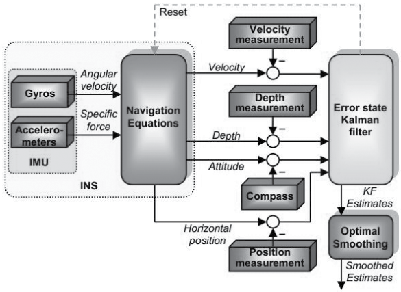
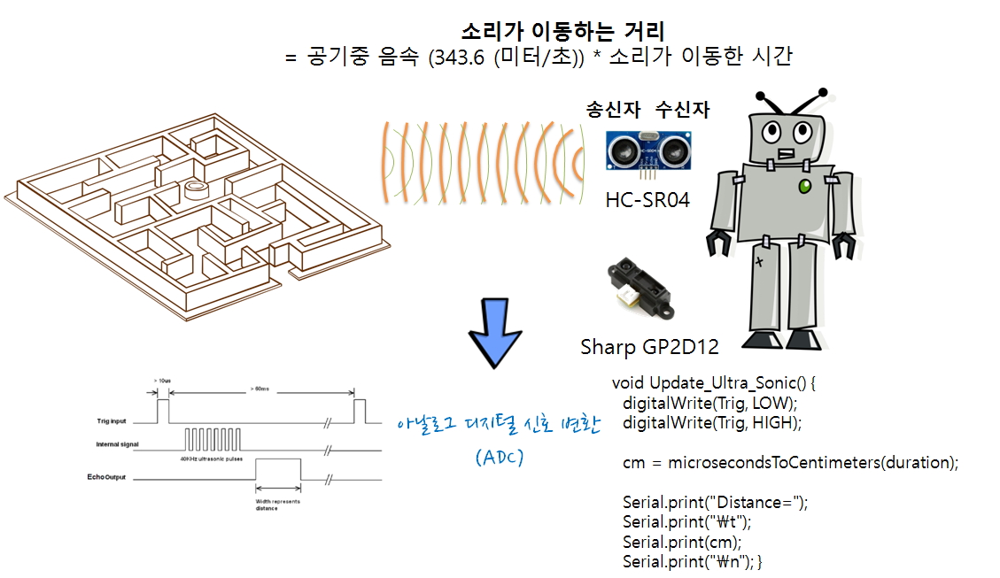

xwMOOC 컴퓨터
(로봇) 센서
학습 목표
- 센서가 무엇이고, 원리가 어떤지 살펴본다.
- 지상 이동 로봇을 위한 초음파, 적외선, 시야, 청각 센서를 알아본다.
- 무인 항공기, 드론을 위한 지자계, 가속도, 자이로스코프 센서를 알아본다.
1. 센서의 기본 원리
다양한 센서가 존재하지만, 기본적인 원리는 아날로그 신호정보를 디지털 신호정보로 변환하여 중앙처리장치할 수 있도록 기초 정보를 제공한다.
물리세계 --> 센서 --> 0 ~ 5V --> ADC --> 0 ~ 1024 --> 중앙처리장치
[아날로그] [디지털]물리세계에서 관심갖고 있는 대상 정보를 다양한 센서(예, 온도, 습도, 압력, 빛, 소리 등)를 가변저항 원리에 따라 아날로그 전기적 신호로 바꾸고, 이를 ADC(Analog to Digital Converter, 아날로그 디지털 변환기)를 통해서 디지털신호정보로 바꾼다. 정확한 정보는 각 센서 반도체 데이터쉬트(Data Sheet)를 살펴봐야 하지만, 온도 센서를 예를 들면 낮은 온도면 0V에 가까운 전압이 되고 최고 온도에 가까우면 5V 값으로 설정하고, 중간온도는 중간 전압으로 ADC에 보내면 ADC는 이를 0 ~ 1024 디지털 정보로 바꾸어 중앙처리장치에서 연산하도록 한다.
물론 센서의 성능에 따라, 혹은 원하는 센서 정보수준에 따라 해상도(Resolution)를 조절할 수 있다. 처리 결과, 성능, 가격 등의 요소를 고려해서 적절한 센서 하드웨어, 처리 기법, 소프트웨어 처리 방법 등을 정한다.
2. 다양한 센서
로봇에 장착되는 센서의 목적은 장애물을 탐지하고 이를 회피하여 충돌을 방지하는데 있따. 지상에서 이동한 로봇과 무인항공기에 이용되는 센서는 다르다.
2.1. 지상 로봇에 적용되는 센서
- 초음파 거리 센서(Ultrasonic distance sensor): HC-SR04
- IR 근접 센서(IR proximity sensor): Sharp GP2D12
- 시야 센서(Vision sensor): 키넥트(Kinect)
- 청각 센서(Audio sensor): 마이크와 스피커
2.2. 무인 항공 로봇에 적용되는 센서
관성측정장비(Inertial Measurement Unit)는 다음을 측정하는 전자장치다. IMU를 통해서 관성공간에서 상대적인 가속도와 방향을 파악할 수 있다.
- 속도(velocity)
- (목표하는) 방향(orientation)
- 중력(gravitational forces)
속도, 방향, 중력을 측정하는데 다음과 같은 센서를 사용한다. MPU 6050
- 가속도 센서(accelerometers)
- 자이로스코프 센서(gyroscopes)
- 자기계 센서(magnetometers)
만약 드론의 초기 위치, 속도, 방향을 알고 있다면, 감지된 가속도를 적분해서 속도를 계산할 수 있고, 두번 적분하면 위치를 알 수 있다. 드론의 정확한 방향을 알고자 한다면, 로봇 방향정보가 필요하다; 자이로스코프에서 감지된 각속도를 적분해서 얻는다.
IMU에서 수집된 정보는 운항방정식과 칼만필터같은 추정필터를 사용해서 운항정보로 변환된다. 칼만 필터(Kalman Fliter)는 측정된 데이터로부터 시스템 상태를 추정하는 알고리즘이다. 전체 알고리즘은 예측과 업데이트의 두 가지로 나눌 수 있다. 예측은 현재 상태의 예측을 말하며, 업데이트는 현재 상태에서 관측된 측정까지 포함한 값을 통해서 더 정확한 예측을 할 수 있는 것을 말한다.
 출처: Lentin Joseph (2015), Learning Robotics Using Python, PACKT Publishing, pp 148.
3. 로봇에 센서 적용
로봇에 HC-SR04 초음파 거리 센서를 장착하면, 송신자(Sender)를 통해서 음파를 발사하고 만약 장애물이 있다면 음파가 반사되어 수신자(Receiver)에 아날로그 정보 형태로 수집이 된다. 이를 아날로그 디지털 신호 변환을 통해 디지털 정보를 변환을 하면 프로그램 언어를 통해 목적하고 있는 거리를 계산해내고 이를 활용하여 미로탈출 같은 문제를 로봇에게 해결하도록 제어를 할 수 있다.
PySerial을 사용해서도 거리 정보를 확인할 수 있다.

Sharp GP2D12 센서는 적외선 IR 광선과 삼각법을 사용한다는 점에서 차이가 있다. 또한 GP2D12는 감지 범위가 10cm 에서 최대 80cm까지 제약이 있다. 적외선 IR센서 좌측에서 적외선이 방출되고 이를 IR 수신기가 받아들이게 된다. 거리 공식은 사정거리 = (6787/(전압 − 3)) − 4, 여기서 전압(Volt)는 ADC에서 나온 아날로그 전압이다.
int IR_SENSOR = 18; // Sensor is connected to the analog A3
int intSensorResult = 0; //Sensor result
float fltSensorCalc = 0; //Calculated value
void setup(){
Serial.begin(115200); // Setup communication with computer to present results serial monitor
}
void loop(){
// read the value from the ir sensor
intSensorResult = analogRead(IR_SENSOR); //Get sensor value
fltSensorCalc = (6787.0 / (intSensorResult - 3.0)) - 4.0; //Calculate distance in cm
Serial.print(fltSensorCalc); //Send distance to computer
Serial.println(" cm"); //Add cm to result
delay(200); //Wait
}적외선 센서를 사용할 경우 몇가지 제약이 있다.
- 햇빛에 영향을 받아 야외에서 사용하기 쉽지 않다.
- 객체가 반사하는 특성이 있는 경우 동작이 잘 되지 않는다.
- 사정거리 방정식이 일정 거리 내에서만 동작한다.